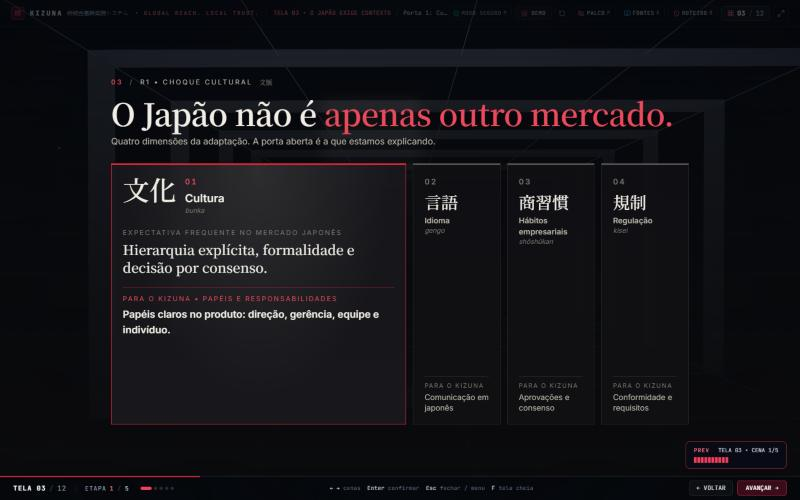
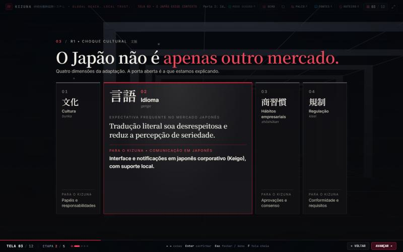
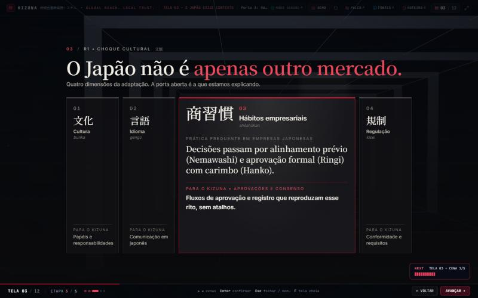
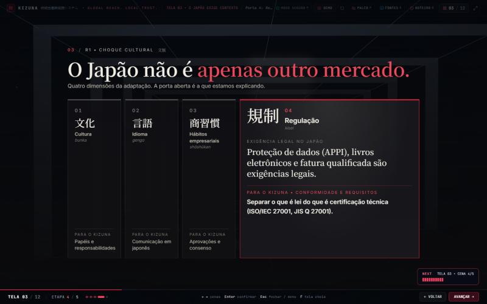
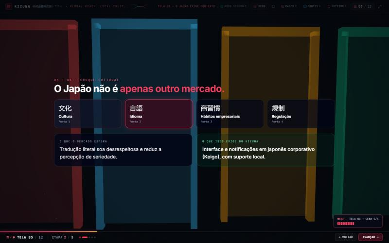
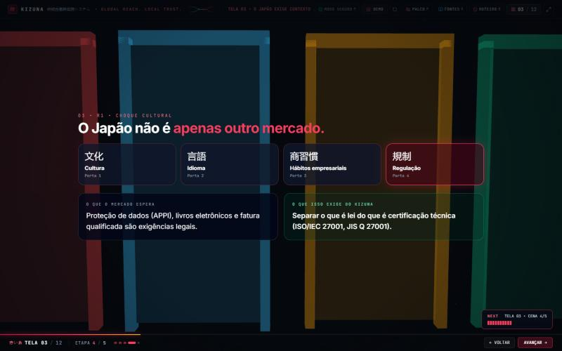
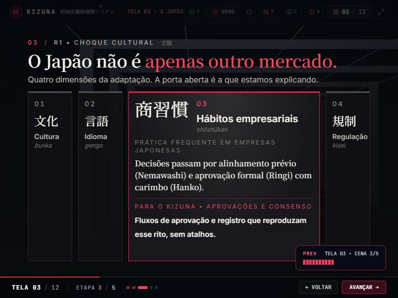
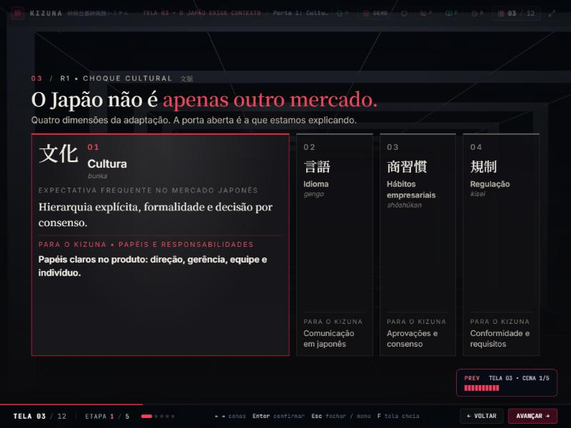
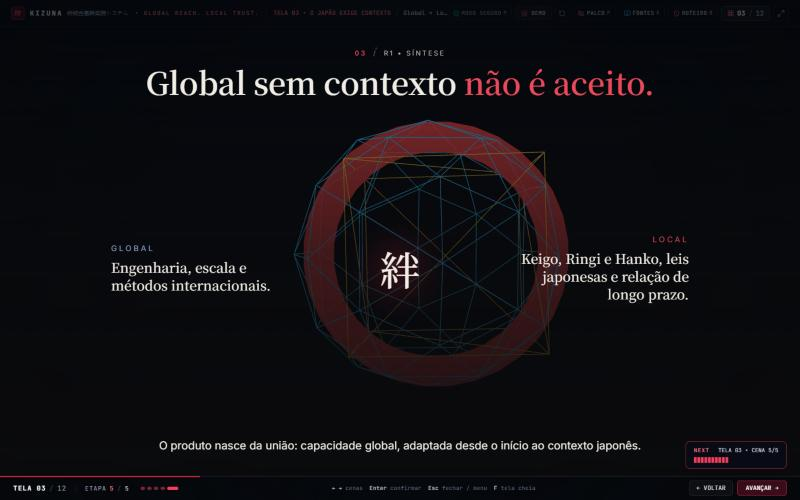

Etapa 8 • tela 03 (R1): as quatro portas
Capturas em 1440 × 900, salvo indicação. Antes: Etapa 7 (molduras 3D coloridas e cartões) e primeira amostra da Etapa 8 (índice à esquerda). Agora: quatro portas identificadas, a aberta com a explicação dentro dela, corredor 3D escuro ao fundo.
03.1 Cultura



03.2 a 03.4 Idioma, Hábitos empresariais, Regulação



Antes Etapa 7, portas 2 e 4


Tamanhos e síntese preservada


